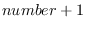
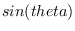

Following functions request arguments to be integers.
mod dividend divisor [function]
-
-
returns remainder when dividend is divided by divisor.
(mod 6 5)=1, (mod -6 5)=-1, (mod 6 -5)=1, (mod -6 -5)=-1.
1- integer [function]
-
-
The compiler assumes the argument to be an integer.
 is returned.
1+ integer [function]
-
-
Arguments to 1+ and 1- must be an integer.
 is returned.
logand &rest integers [function]
-
- bitwise-and of integers.
logior &rest integers [function]
-
- bitwise-inclusive-or of integers.
logxor &rest integers [function]
-
- bitwise-exclusive-or of integers.
logeqv &rest integers [function]
-
-
logeqv is equivalent to (lognot (logxor ...)).
lognand &rest integers [function]
-
- bitwise-nand of integers.
lognor &rest integers [function]
-
- bitwise-nor of integers.
lognot integer [function]
-
- bit reverse of integer.
logtest integer1 integer2 [function]
-
-
T if (logand integer1 integer2) is not zero.
logbitp index integer [function]
-
-
T if indexth bit of integer (counted from the LSB) is 1,
otherwise NIL.
ash integer count [function]
-
-
Arithmetic Shift Left.
If count is positive, shift direction is left,
and if count is negative,
integer is shifted to right by abs(count) bits.
ldb target position width [function]
-
-
LoaD Byte.
Byte specifier for ldb and dpb does not exist in EusLisp.
Use a pair of integers instead.
The field of width bits at position within target
is extracted. For example, (ldb #x1234 4 4) is 3.
dpb value integer position width [function]
-
-
DePosit byte.
Width bits of value is put in integer
at positionth bits from LSB.
2016-03-23